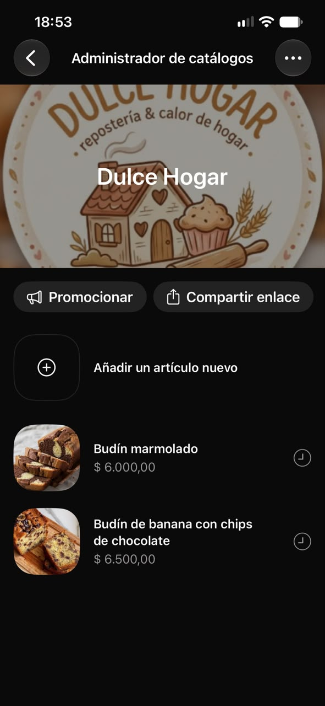

Módulo 2
Carga del catálogo digital
¿Cómo querés capacitarte?
Girá el celular para verlo más grande

Capacitación WhatsApp Business · Módulo 2
Cargá tu catálogo
Publicá tus productos con foto, precio y descripción.
Entrar
Añadir
Completar
Guardar
¡Visible!

¿Qué budines tienen?
¡Mirá nuestro catálogo! ✓✓
1 / 9
Tocá pantalla completa para ver mejor
Actividad evaluativa
¿Cuánto aprendiste?
Terminá la presentación o el video para desbloquear la actividad. Es obligatoria para completar el módulo.
Actividad evaluativa · Obligatoria
0 / 4 respondidas
¿Cuánto aprendiste?
Completá las cuatro actividades correctamente para terminar el módulo. Si te equivocás, podés volver a intentarlo.
¡Módulo 2 completado!
Respondiste todo bien. Ya podés seguir con la próxima capacitación.